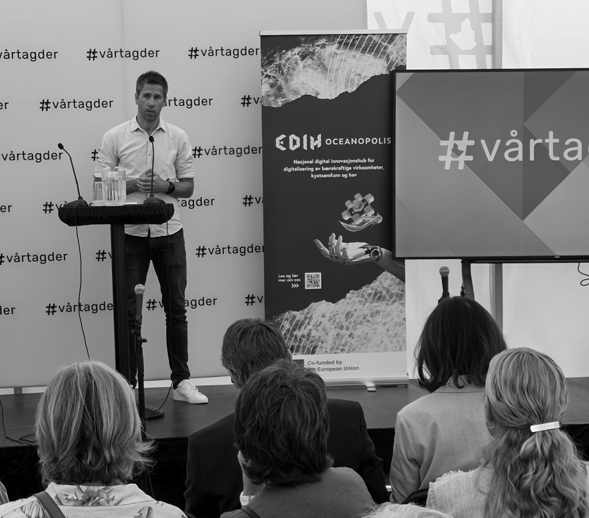

Praktisk KI. Menneskelig dømmekraft.
Mennesker først. Teknologi som virker.
Jeg hjelper virksomheter å bruke kunstig intelligens (KI) i arbeidshverdagen. Med sparring, små prototyper, kurs og foredrag.
Arbeidsbenken
Fra konkret oppgave til kontrollert utprøving.
KI kan brukes til å sortere informasjon og lage utkast. Vi undersøker hva som passer i arbeidsflyten deres, og fagpersonen vurderer resultatet.
Sparring og prototype
Vi avklarer muligheter og kan prøve en avgrenset prototype (MVP). Slik får dere grunnlag for å vurdere neste steg.
Agenter i arbeidsflyt
Agenter kan gi avgrenset hjelp til å samle kilder, sortere informasjon og lage utkast. Vi undersøker hva som passer i arbeidsflyten, og vurderer behov for integrasjon særskilt.
Videreutvikling & forbedring
Tilbakemeldinger fra fagfolk viser hva som bør endres, videreføres eller legges bort.
01 — AVKLARE
Finn oppgaven
Vi tar utgangspunkt i en oppgave som stjeler tid og oppmerksomhet fra fagarbeidet.
02 — PRØVE
Sett opp flyten
KI hjelper med sortering og førsteutkast. Ingen beslutning flyttes bort fra faget.
03 — KONTROLLERE
Faglig kontroll
Fagpersonen sjekker kvalitet og språk, og godkjenner det som skal ut.
04 — VELGE
Behold eller stopp
Etter utprøvingen vurderer vi om arbeidet skal videreføres, endres eller stoppes.
Passer når
Dere vil rydde i en konkret oppgave.
- Det finnes notater, bilder, skjema eller tekst som må sorteres.
- Folk bruker tid på samme forarbeid flere ganger.
- Faglig kontroll er viktigere enn fart for enhver pris.
Passer ikke når
Dere egentlig trenger et stort innføringsløp.
- Målet er å kjøpe eller bytte et helt IT-system.
- Ingen eier oppgaven eller vil prøve den i praksis.
- Dere vil at KI skal ta faglige beslutninger alene.
Om og foredrag
Faglig tyngde. Mennesket i sentrum.
Jeg er statsviter og medgrunnlegger av KI-geriljaen, med bakgrunn fra HR og HMS. Jeg jobber i møtet mellom fag, folk og teknologi.
Jeg liker å ta utgangspunkt i det folk faktisk trenger hjelp med. Sammen avgrenser vi oppgaven og undersøker om KI kan være nyttig i arbeidet.
KI erstatter ikke faglig dømmekraft. God og bærekraftig bruk krever kildekritikk, personvern og menneskelig kontroll.

Foredrag & Kurs
Effektivisering i praksis
Hvordan KI kan støtte rutiner, forarbeid og tekst, og hvordan nytten kan vurderes i praksis.
Foredrag & Kurs
Folk, organisasjon og KI
Praktiske spørsmål om regelverk, etikk, partsamarbeid og personvern ved bruk av KI.
Foredrag & Kurs
Kvalitet, kontroll og agenter
Hvordan vurdere agenter, etablere kontrollpunkter og beholde faglig ansvar.
Erfaring og referanser
Erfaring fra arbeidslivet og fagscenene.
Jeg jobber i skjæringspunktet mellom fag, folk og tekniske miljøer — med praktisk nytte og trygghet som utgangspunkt.
- NRKOmtale av praktisk KI i arbeidshverdagen. Les omtalen (åpner i ny fane)
- HR NorgeDigital effektivisering og bruk av KI. Les artikkelen (åpner i ny fane)
- Tech Talks AgderKI i arbeidshverdagen — fra idé til kode. Se arrangementet (åpner i ny fane)
Digi Agder omtaler hvordan Lars Erik viste statsråd Karianne Tung praktisk bruk av KI i arbeidshverdagen i Kristiansand kommune.
Les omtalen hos Digi Agder (åpner i ny fane)Se flere dokumenterte omtaler og fagscener
- NRK Sørlandet — Halverte arbeidsuka med KI (åpner i ny fane)
- NRK Sørlandet radio (åpner i ny fane)
- Agder in the Cloud (åpner i ny fane)
- HR Norge (åpner i ny fane)
- Tech Talks Agder / Digin (åpner i ny fane)
- DigiViken — kurs og foredrag om praktisk KI-innføring (2025) (åpner i ny fane)
- Universitetet i Innlandet (åpner i ny fane)
- Samfunnsviterne (åpner i ny fane)
- NRK Sørlandet — KI-veileder (åpner i ny fane)
- kode24 (åpner i ny fane)
- Lawai (åpner i ny fane)
- Juridisk ABC (podkast) (åpner i ny fane)
- LinkedIn-artikkel (åpner i ny fane)
- AIavisen — Min KI-reise (åpner i ny fane)
- Fædrelandsvennen (åpner i ny fane)
- Oceanopolis / Arendalsuka (åpner i ny fane)
- Digi Agder — Syntaks (åpner i ny fane)